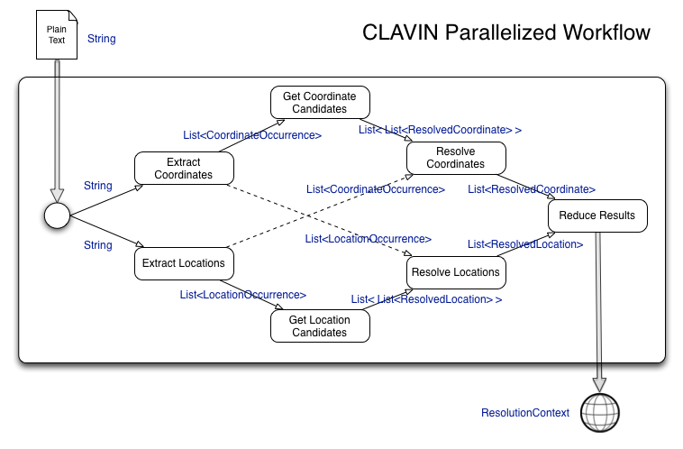

CLAVIN's Processing Workflow
If you are curious how CLAVIN works, this section will describe it's primary workflow: resolving coordinates and locations from text.
CLAVIN follows a multistep process for processing text. The process can be separated into two distinct phases:
Extraction - CLAVIN utilizes a LocationExtractor and a CoordianteExtractor to extract resolvable strings of characters in text.
Resolution - Using the results of the extractors, CLAVIN resolves LocationOccurrences and CoordinateOccurrences to the most likely Place they represent.
The Extraction and Resolution phase can be even further broken down, however. The following diagram shows the entire process:

Text is passed to CLAVIN.
Plain-named locations are extracted from the text.
Coordinates are extracted from the text.
For each plain-named location, the location name index is searched for potential location candidates.
For each coordinate, the coordinate index is searched for potential Coordinate candidates.
Using the location candidates and the coordinate occurrences, the best location candidate is selected (resolved).
Using the coordinate candidates and the location occurrences, the best coordinate candidate is selected (resolved).
The results of both resolution (selection) steps are merged and reduced (filtered or aggregates calculated).
Resolution results are returned.
As we may have mentioned before, CLAVIN is a toolkit with a predefined (sensible default) workflow developers can leverage to parse and resolve locations from text. The default workflow is the GeoParser class, but by no means are you isolated to working with it alone. Future versions of CLAVIN will include alternate workflows, with corresponding factories, to help ease the learning curve of using CLAVINs algorithms.